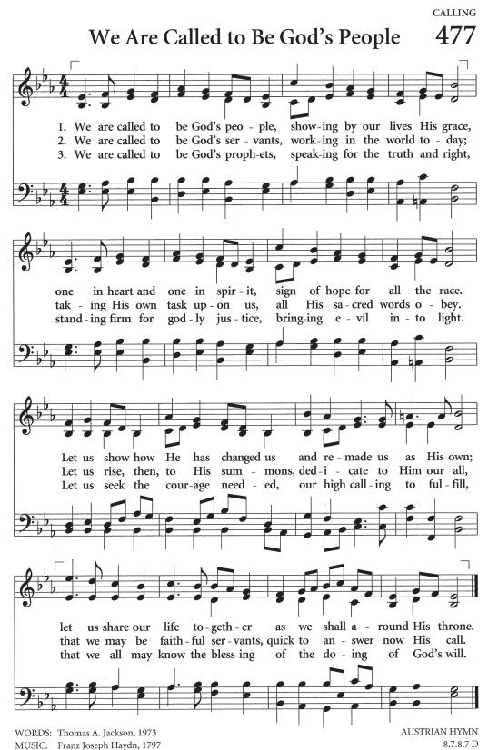

|
|
【我們蒙召為神子民】 |
|
[ We Are Called to Be God's People ] |
|
|
We Are Called to Be God's PeopleWe Are Called to Be God's People 
https://choirdb.hk/product/we-are-called-to-be-gods-people-jesus-shall-reign/ |
|
|
|
|


我們蒙召為神子民 We Are Called to Be God's People ( 曲 : Franz J Haydn ) 香港聖詩會成立十周年感恩頌唱會 2013 年 - We Are Called To Be God's People(Haydn & Jackson) by FBC Choir https://youtu.be/6AE155aDgNQ
| Text: | We Are Called to Be God's People |
| Author: | Thomas A. Jackson |
| Tune: | AUSTRIAN HYMN |
| Composer: | Franz Joseph Haydn |
| Short Name: | Thomas A. Jackson |
| Full Name: | Jackson, Thomas Albert, 1931- |
| Birth Year: | 1931 |
As of 2008, Jackson was a Professor Emeritus at Campbell University, North Carolina.
Tune Information
| Title: | AUSTRIAN HYMN |
| Composer: | Joseph Haydn (1797) |
| Meter: | 8.7.8.7 D |
| Incipit: | 12324 32716 54323 |
| Key: | E♭ Major |
| Copyright: | Public Domain |
| Short Name: | Joseph Haydn |
| Full Name: | Haydn, Joseph, 1732-1809 |
| Birth Year: | 1732 |
| Death Year: | 1809 |
Franz Joseph Haydn (b. Rohrau, Austria, 1732; d. Vienna, Austria, 1809)

Haydn's life was relatively uneventful, but his artistic legacy was truly astounding. He began his musical career as a choirboy in St. Stephen's Cathedral, Vienna, spent some years in that city making a precarious living as a music teacher and composer, and then served as music director for the Esterhazy family from 1761 to 1790. Haydn became a most productive and widely respected composer of symphonies, chamber music, and piano sonatas. In his retirement years he took two extended tours to England, which resulted in his "London" symphonies and (because of G. F. Handel's influence) in oratorios. Haydn's church music includes six great Masses and a few original hymn tunes. Hymnal editors have also arranged hymn tunes from various themes in Haydn's music.
Bert Polman